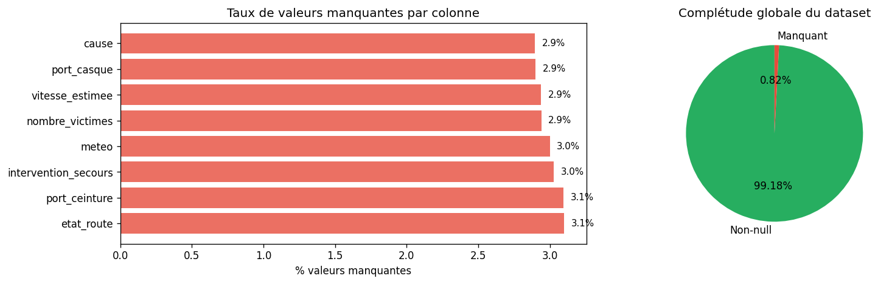
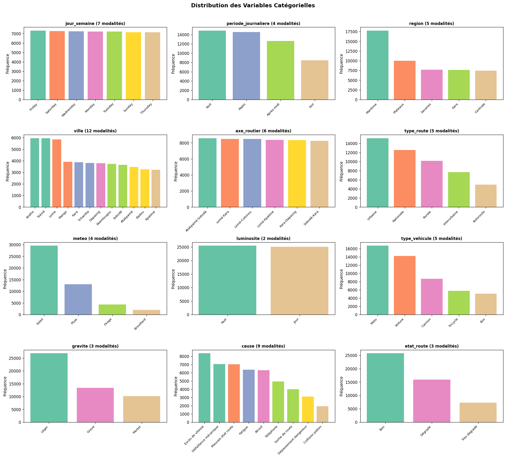
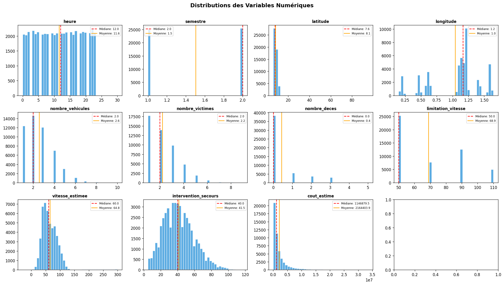

01 — Collecte & Exploration Initiale des Données#
Projet : Togo Road Accidents Capstone
Objectif : Charger les données brutes, comprendre leur structure, valider la qualité initiale.
import sys
sys.path.insert(0, '../src')
import pandas as pd
import numpy as np
import matplotlib.pyplot as plt
import seaborn as sns
from pathlib import Path
import warnings
warnings.filterwarnings('ignore')
# Configuration
pd.set_option('display.max_columns', None)
pd.set_option('display.float_format', '{:.2f}'.format)
plt.rcParams['figure.dpi'] = 120
DATA_PATH = Path('../data/raw/togo_road_accidents_dataset.csv')
print('Librairies chargées ✓')
Librairies chargées ✓
1. Chargement du dataset#
df = pd.read_csv(DATA_PATH, parse_dates=['date_accident'])
print(f'Dataset chargé : {df.shape[0]:,} lignes × {df.shape[1]} colonnes')
print(f'Mémoire : {df.memory_usage(deep=True).sum()/1e6:.1f} MB')
df.head()
Dataset chargé : 50,500 lignes × 29 colonnes
Mémoire : 60.9 MB
| accident_id | date_accident | heure | jour_semaine | semestre | periode_journaliere | region | ville | latitude | longitude | axe_routier | type_route | meteo | luminosite | type_vehicule | nombre_vehicules | nombre_victimes | nombre_deces | gravite | cause | etat_route | limitation_vitesse | vitesse_estimee | port_casque | port_ceinture | intervention_secours | type_accident | accident_fete | cout_estime | |
|---|---|---|---|---|---|---|---|---|---|---|---|---|---|---|---|---|---|---|---|---|---|---|---|---|---|---|---|---|---|
| 0 | 1 | 2025-08-02 | 4 | Saturday | 2 | Nuit | Plateaux | Atakpamé | 7.52 | 1.14 | Atakpamé-Sokodé | Nationale | Soleil | Nuit | Bus | 2 | 2.00 | 0 | Grave | Alcool | Bon | 90 | NaN | Oui | Oui | 37.00 | Collision frontale | Non | 2500831 |
| 1 | 2 | 2025-01-21 | 3 | Tuesday | 1 | Nuit | Maritime | Aného | 6.23 | 1.58 | Sokodé-Kara | Autoroute | Soleil | Nuit | Camion | 1 | 1.00 | 0 | Léger | Excès de vitesse | Bon | 110 | 73.00 | Oui | Oui | 16.00 | Sortie de route | Non | 1460787 |
| 2 | 3 | 2022-02-24 | 20 | Thursday | 1 | Soir | Maritime | Lome | 6.13 | 1.24 | Sokodé-Kara | Nationale | Soleil | Nuit | Moto | 3 | 2.00 | 2 | Mortel | Défaillance mécanique | Dégradé | 90 | 83.00 | Oui | Oui | 29.00 | Renversement | Non | 803314 |
| 3 | 4 | 2023-07-24 | 0 | Monday | 2 | Nuit | Savanes | Dapaong | 10.85 | 0.19 | Lomé-Kara | Rurale | Pluie | Nuit | Tricycle | 6 | 1.00 | 0 | Léger | NaN | Bon | 50 | 59.00 | Oui | Oui | 47.00 | Collision arrière | Non | 231539 |
| 4 | 5 | 2022-07-29 | 3 | Friday | 2 | Nuit | Maritime | Tsévié | 6.44 | 1.22 | Atakpamé-Sokodé | Rurale | Orage | Nuit | Camion | 3 | 2.00 | 0 | Grave | Fatigue | Bon | 50 | 62.00 | Oui | Oui | 34.00 | Renversement | Non | 2064952 |
2. Dictionnaire des variables#
data_dict = {
'accident_id': ('int', 'Identifiant unique de l\'accident'),
'date_accident': ('date', 'Date de l\'accident (YYYY-MM-DD)'),
'heure': ('int', 'Heure de l\'accident (0-23)'),
'jour_semaine': ('str', 'Jour de la semaine en anglais'),
'semestre': ('int', 'Semestre de l\'année (1 ou 2)'),
'periode_journaliere': ('str', 'Matin / Après-midi / Soir / Nuit'),
'region': ('str', 'Région du Togo (5 régions)'),
'ville': ('str', 'Ville où s\'est produit l\'accident'),
'latitude': ('float', 'Latitude GPS'),
'longitude': ('float', 'Longitude GPS'),
'axe_routier': ('str', 'Nom de l\'axe routier'),
'type_route': ('str', 'Urbaine / Interurbaine / Rurale'),
'meteo': ('str', 'Conditions météo au moment de l\'accident'),
'luminosite': ('str', 'Jour / Nuit / Crépuscule'),
'type_vehicule': ('str', 'Type de véhicule principal impliqué'),
'nombre_vehicules': ('int', 'Nombre de véhicules impliqués'),
'nombre_victimes': ('float', 'Nombre de personnes blessées'),
'nombre_deces': ('int', 'Nombre de décès'),
'gravite': ('str', 'CIBLE : Léger / Grave / Mortel'),
'cause': ('str', 'Cause principale de l\'accident'),
'etat_route': ('str', 'Bon / Dégradé / Très dégradé'),
'limitation_vitesse': ('int', 'Limitation de vitesse sur l\'axe (km/h)'),
'vitesse_estimee': ('float', 'Vitesse estimée du véhicule (km/h)'),
'port_casque': ('str', 'Port du casque (Oui/Non)'),
'port_ceinture': ('str', 'Port de la ceinture (Oui/Non)'),
'intervention_secours': ('float', 'Délai d\'intervention des secours (minutes)'),
'type_accident': ('str', 'Type de collision'),
'accident_fete': ('str', 'Accident survenu un jour férié (Oui/Non)'),
'cout_estime': ('int', 'Coût économique estimé (FCFA)'),
}
dict_df = pd.DataFrame(data_dict, index=['Type', 'Description']).T
dict_df.index.name = 'Colonne'
print(f'Variables : {len(dict_df)}')
dict_df
Variables : 29
| Type | Description | |
|---|---|---|
| Colonne | ||
| accident_id | int | Identifiant unique de l'accident |
| date_accident | date | Date de l'accident (YYYY-MM-DD) |
| heure | int | Heure de l'accident (0-23) |
| jour_semaine | str | Jour de la semaine en anglais |
| semestre | int | Semestre de l'année (1 ou 2) |
| periode_journaliere | str | Matin / Après-midi / Soir / Nuit |
| region | str | Région du Togo (5 régions) |
| ville | str | Ville où s'est produit l'accident |
| latitude | float | Latitude GPS |
| longitude | float | Longitude GPS |
| axe_routier | str | Nom de l'axe routier |
| type_route | str | Urbaine / Interurbaine / Rurale |
| meteo | str | Conditions météo au moment de l'accident |
| luminosite | str | Jour / Nuit / Crépuscule |
| type_vehicule | str | Type de véhicule principal impliqué |
| nombre_vehicules | int | Nombre de véhicules impliqués |
| nombre_victimes | float | Nombre de personnes blessées |
| nombre_deces | int | Nombre de décès |
| gravite | str | CIBLE : Léger / Grave / Mortel |
| cause | str | Cause principale de l'accident |
| etat_route | str | Bon / Dégradé / Très dégradé |
| limitation_vitesse | int | Limitation de vitesse sur l'axe (km/h) |
| vitesse_estimee | float | Vitesse estimée du véhicule (km/h) |
| port_casque | str | Port du casque (Oui/Non) |
| port_ceinture | str | Port de la ceinture (Oui/Non) |
| intervention_secours | float | Délai d'intervention des secours (minutes) |
| type_accident | str | Type de collision |
| accident_fete | str | Accident survenu un jour férié (Oui/Non) |
| cout_estime | int | Coût économique estimé (FCFA) |
3. Profil des types de données#
# Types et cardinalité
profile = pd.DataFrame({
'dtype': df.dtypes,
'non_null': df.count(),
'null_pct': (df.isnull().mean() * 100).round(2),
'unique': df.nunique(),
'exemple': df.iloc[0]
})
profile
| dtype | non_null | null_pct | unique | exemple | |
|---|---|---|---|---|---|
| accident_id | int64 | 50500 | 0.00 | 50000 | 1 |
| date_accident | datetime64[ns] | 50500 | 0.00 | 1461 | 2025-08-02 00:00:00 |
| heure | int64 | 50500 | 0.00 | 25 | 4 |
| jour_semaine | object | 50500 | 0.00 | 7 | Saturday |
| semestre | int64 | 50500 | 0.00 | 2 | 2 |
| periode_journaliere | object | 50500 | 0.00 | 4 | Nuit |
| region | object | 50500 | 0.00 | 5 | Plateaux |
| ville | object | 50500 | 0.00 | 12 | Atakpamé |
| latitude | float64 | 50500 | 0.00 | 47942 | 7.52 |
| longitude | float64 | 50500 | 0.00 | 46639 | 1.14 |
| axe_routier | object | 50500 | 0.00 | 6 | Atakpamé-Sokodé |
| type_route | object | 50500 | 0.00 | 5 | Nationale |
| meteo | object | 48985 | 3.00 | 4 | Soleil |
| luminosite | object | 50500 | 0.00 | 2 | Nuit |
| type_vehicule | object | 50500 | 0.00 | 5 | Bus |
| nombre_vehicules | int64 | 50500 | 0.00 | 10 | 2 |
| nombre_victimes | float64 | 49015 | 2.94 | 9 | 2.00 |
| nombre_deces | int64 | 50500 | 0.00 | 5 | 0 |
| gravite | object | 50500 | 0.00 | 3 | Grave |
| cause | object | 49038 | 2.90 | 9 | Alcool |
| etat_route | object | 48934 | 3.10 | 3 | Bon |
| limitation_vitesse | int64 | 50500 | 0.00 | 4 | 90 |
| vitesse_estimee | float64 | 49017 | 2.94 | 253 | NaN |
| port_casque | object | 49036 | 2.90 | 2 | Oui |
| port_ceinture | object | 48936 | 3.10 | 2 | Oui |
| intervention_secours | float64 | 48972 | 3.03 | 110 | 37.00 |
| type_accident | object | 50500 | 0.00 | 6 | Collision frontale |
| accident_fete | object | 50500 | 0.00 | 2 | Non |
| cout_estime | int64 | 50500 | 0.00 | 49582 | 2500831 |
4. Analyse des valeurs manquantes#
import missingno as msno
nulls = df.isnull().sum().sort_values(ascending=False)
nulls = nulls[nulls > 0]
fig, axes = plt.subplots(1, 2, figsize=(14, 4))
# Barres des valeurs manquantes
nulls_pct = (nulls / len(df) * 100)
axes[0].barh(nulls.index, nulls_pct, color='#e74c3c', alpha=0.8)
axes[0].set_xlabel('% valeurs manquantes')
axes[0].set_title('Taux de valeurs manquantes par colonne')
for i, (col, pct) in enumerate(nulls_pct.items()):
axes[0].text(pct + 0.05, i, f'{pct:.1f}%', va='center', fontsize=9)
# Distribution globale
axes[1].pie(
[df.count().sum(), df.isnull().sum().sum()],
labels=['Non-null', 'Manquant'],
colors=['#27ae60', '#e74c3c'],
autopct='%1.2f%%',
startangle=90
)
axes[1].set_title('Complétude globale du dataset')
plt.tight_layout()
plt.savefig('../reports/figures/01_missing_values.png', dpi=150, bbox_inches='tight')
plt.show()
print(f'Total valeurs manquantes : {df.isnull().sum().sum():,}')
print(f'Taux de complétude global : {(1 - df.isnull().mean().mean())*100:.2f}%')

Total valeurs manquantes : 12,067
Taux de complétude global : 99.18%
5. Exploration des variables catégorielles#
cat_cols = df.select_dtypes(include='object').columns.tolist()
fig, axes = plt.subplots(4, 3, figsize=(18, 16))
axes = axes.flatten()
for i, col in enumerate(cat_cols[:12]):
vc = df[col].value_counts()
axes[i].bar(range(len(vc)), vc.values, color=plt.cm.Set2(np.linspace(0, 0.8, len(vc))))
axes[i].set_xticks(range(len(vc)))
axes[i].set_xticklabels(vc.index, rotation=45, ha='right', fontsize=8)
axes[i].set_title(f'{col} ({vc.nunique()} modalités)', fontsize=10, fontweight='bold')
axes[i].set_ylabel('Fréquence')
plt.suptitle('Distribution des Variables Catégorielles', fontsize=14, fontweight='bold', y=1.01)
plt.tight_layout()
plt.savefig('../reports/figures/01_cat_distributions.png', dpi=150, bbox_inches='tight')
plt.show()

6. Exploration des variables numériques#
num_cols = df.select_dtypes(include=np.number).columns.tolist()
num_cols_viz = [c for c in num_cols if c not in ['accident_id']]
fig, axes = plt.subplots(3, 4, figsize=(18, 10))
axes = axes.flatten()
for i, col in enumerate(num_cols_viz[:12]):
data = df[col].dropna()
axes[i].hist(data, bins=40, color='#3498db', alpha=0.8, edgecolor='white')
axes[i].axvline(data.median(), color='red', linestyle='--', linewidth=1.5, label=f'Médiane: {data.median():.1f}')
axes[i].axvline(data.mean(), color='orange', linestyle='-', linewidth=1.5, label=f'Moyenne: {data.mean():.1f}')
axes[i].set_title(col, fontsize=10, fontweight='bold')
axes[i].legend(fontsize=7)
plt.suptitle('Distributions des Variables Numériques', fontsize=14, fontweight='bold', y=1.01)
plt.tight_layout()
plt.savefig('../reports/figures/01_num_distributions.png', dpi=150, bbox_inches='tight')
plt.show()
df[num_cols_viz].describe().round(2)

| heure | semestre | latitude | longitude | nombre_vehicules | nombre_victimes | nombre_deces | limitation_vitesse | vitesse_estimee | intervention_secours | cout_estime | |
|---|---|---|---|---|---|---|---|---|---|---|---|
| count | 50500.00 | 50500.00 | 50500.00 | 50500.00 | 50500.00 | 49015.00 | 50500.00 | 50500.00 | 49017.00 | 48972.00 | 50500.00 |
| mean | 11.57 | 1.50 | 8.07 | 1.04 | 2.58 | 2.22 | 0.43 | 68.89 | 64.85 | 41.46 | 2164403.89 |
| std | 6.94 | 0.50 | 1.84 | 0.40 | 1.35 | 1.25 | 0.87 | 21.36 | 29.62 | 18.06 | 2798703.47 |
| min | 0.00 | 1.00 | 6.07 | 0.15 | 1.00 | 1.00 | 0.00 | 50.00 | -30.00 | 5.00 | 62689.00 |
| 25% | 6.00 | 1.00 | 6.41 | 0.63 | 2.00 | 1.00 | 0.00 | 50.00 | 45.00 | 28.00 | 556205.75 |
| 50% | 12.00 | 2.00 | 7.57 | 1.16 | 2.00 | 2.00 | 0.00 | 50.00 | 60.00 | 40.00 | 1146879.50 |
| 75% | 18.00 | 2.00 | 9.56 | 1.22 | 3.00 | 3.00 | 0.00 | 90.00 | 81.00 | 53.00 | 2532222.50 |
| max | 30.00 | 2.00 | 95.00 | 1.65 | 10.00 | 9.00 | 5.00 | 110.00 | 299.00 | 117.00 | 33434640.00 |
7. Anomalies détectées — Rapport initial#
anomalies = {}
# Heures hors plage 0-23
anomalies['heure_hors_plage'] = ((df['heure'] < 0) | (df['heure'] > 23)).sum()
# Coûts négatifs
anomalies['cout_negatif'] = (df['cout_estime'] < 0).sum()
# Décès > victimes
anomalies['deces_sup_victimes'] = (df['nombre_deces'] > df['nombre_victimes']).sum()
# Vitesses > 200 km/h
anomalies['vitesse_aberrante'] = (df['vitesse_estimee'] > 200).sum()
# Doublons
anomalies['doublons'] = df.duplicated(subset=['accident_id']).sum()
anomaly_df = pd.DataFrame.from_dict(anomalies, orient='index', columns=['Nombre'])
anomaly_df['% du dataset'] = (anomaly_df['Nombre'] / len(df) * 100).round(3)
anomaly_df['Action'] = [
'Correction par modulo 24',
'Remplacement par médiane',
'Suppression de la ligne',
'Plafonnement à 200 km/h',
'Déduplication'
]
print('═' * 60)
print('RAPPORT D\'ANOMALIES INITIALES')
print('═' * 60)
print(anomaly_df.to_string())
print('\n→ Ces anomalies seront corrigées dans le notebook 02_data_cleaning.ipynb')
════════════════════════════════════════════════════════════
RAPPORT D'ANOMALIES INITIALES
════════════════════════════════════════════════════════════
Nombre % du dataset Action
heure_hors_plage 8 0.02 Correction par modulo 24
cout_negatif 0 0.00 Remplacement par médiane
deces_sup_victimes 10 0.02 Suppression de la ligne
vitesse_aberrante 423 0.84 Plafonnement à 200 km/h
doublons 500 0.99 Déduplication
→ Ces anomalies seront corrigées dans le notebook 02_data_cleaning.ipynb
8. Statistiques de la variable cible (gravite)#
target_dist = df['gravite'].value_counts()
target_pct = df['gravite'].value_counts(normalize=True) * 100
target_df = pd.DataFrame({'Nombre': target_dist, 'Pourcentage (%)': target_pct.round(2)})
print('Distribution de la variable cible (gravite) :')
print(target_df)
# Calcul du déséquilibre
majority_pct = target_pct.max()
minority_pct = target_pct.min()
print(f'\nRatio déséquilibre : {majority_pct/minority_pct:.1f}:1')
print('→ Imbalanced dataset : utiliser class_weight="balanced" ou SMOTE')
Distribution de la variable cible (gravite) :
Nombre Pourcentage (%)
gravite
Léger 26881 53.23
Grave 13410 26.55
Mortel 10209 20.22
Ratio déséquilibre : 2.6:1
→ Imbalanced dataset : utiliser class_weight="balanced" ou SMOTE
# Sauvegarde du rapport
report = {
'shape': df.shape,
'periode': f"{df['date_accident'].min().date()} → {df['date_accident'].max().date()}",
'nb_colonnes': df.shape[1],
'nb_lignes': df.shape[0],
'completude_pct': round((1 - df.isnull().mean().mean()) * 100, 2),
'nb_anomalies': sum(anomalies.values()),
'target_distribution': target_df.to_dict()
}
import json
with open('../reports/tables/01_collection_report.json', 'w', encoding='utf-8') as f:
json.dump(report, f, ensure_ascii=False, indent=2, default=str)
print('✓ Rapport sauvegardé dans reports/tables/01_collection_report.json')
print('\n→ Prochaine étape : notebook 02_data_cleaning.ipynb')
✓ Rapport sauvegardé dans reports/tables/01_collection_report.json
→ Prochaine étape : notebook 02_data_cleaning.ipynb